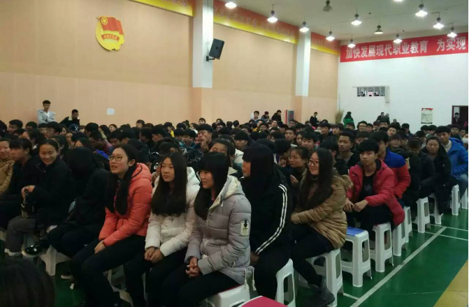

内蒙古自治区赛区新闻发布会暨文化系列活动
发布时间：2016-01-02
2015年12月27日，首届“中国影视歌曲歌手大赛”内蒙古自治区赛区启动仪式暨新闻发布会在呼和浩特隆重召开。大赛组委会总部主席姜国顺、执行主席高洁、副主席刘金英、秘书长张国顺、主席助理贾月亮、全国总工会文工团著名作曲家何国强等部分组委会总部领导成员；内蒙古自治区各市、旗县领导、内蒙古电影家协会、内蒙古电视艺术家协会、内蒙古音乐家协会、内蒙古电影集团领导以及自治区优秀文艺工作者、各企事业单位领导等参加了本次新闻发布会。
大赛组委会总部主席姜国顺；内蒙古自治区赛区组委会主席伊龙；大赛组委会总部副秘书长、分赛区主席候引明；中国著名媒体人、内蒙古首席记者刘少华；中国著名导演王新民、张元龙；著名蒙古族词作家克明；著名歌唱家、内蒙古师范大学教授潮鲁；著名演员魏大鸣等为发布会致词。
内蒙古电视台、北方新报、晨报、搜狐、新浪等国内30余家媒体参加了发布会，其他诸多媒体也对此次发布会进行了新闻报道。
大赛组委会总部主席 姜国顺
大赛组委会总部副秘书长、内蒙古赛区主席 候引明
著名导演、内蒙古赛区名誉主席 王新民
左一：内蒙古赛区执行主席 邓宝
左二：著名导演 内蒙古赛区名誉主席 张元龙
左四：大赛组委会总部主任 内蒙古赛区执行主任 贺来虎
著名蒙古族词作家 克明
中国著名策划人、内蒙古赛区特邀评委 张雷
著名影视演员 魏大鸣
著名演员 编剧 内蒙古赛区特邀评委 杨根和
左二：著名相声演员 王文水
内蒙古赛区宣传活动
2015年11月19日，首届“中国影视歌曲歌手大赛”内蒙古赛区组委会的成员们走进了呼和浩特市第三职业中专学校，与同学们进行爱国主义思想教育宣传活动。
2015年11月27日下午，首届“中国影视歌曲歌手大赛”内蒙古赛区组委会的成员们走进了内蒙古机电职业技术学院，通过对同学们进行老电影的主题歌、插曲歌曲的介绍与对老电影的故事回味，进行了一场爱国主义思想教育宣传活动，同学们深受感动并积级参与，现场气氛十分热烈。
内蒙古赛区组委会外景摄制组的同志们还走进了百姓进行实地采访，唤醒人们对老电影、电视剧的故事情节回忆以及与现场群众一起大声同唱老电影、电视剧歌曲，唱起那《一条大河》、《英雄赞歌》等等那些深深刻在人们心中的歌唱祖国的好歌曲，现场群众非常震憾，很多人与大赛组委会的同志们一同流下了激动的眼泪。
此次宣传活动给在场的几百名内蒙古人们留下了深刻的感想，当组委会外景摄制组的同志们即将离开时，人们一直依依不舍的跟随着，此次宣传活动已在互联网平台、广播、报纸等许多媒体进行了大面积的报道，届时并收到了国内著名演员张国强、候勇、丁海峰、吴连生等知名演员的视频祝福。
2015年11月30日内蒙古赛区主席候引明走进电台直播间相约调频99.8兆赫
2015年12月10日，首届“中国影视歌曲歌手大赛”内蒙古赛区组委会宣传活动组的成员们走进了内蒙古建筑职业技术学院，与同学们进行了爱国主义教育互动宣传活动，活动中大赛组委会成员与师生们进行了关于中国电影回顾与中国电影历史的知识问答，同学们深受感动并积级参与。

2016年1月2日内蒙古赛区第一场海选，现场参赛选手盛装出席，令内蒙古赛区大赛组委会全体工作人员非常感动！

上一篇：黑龙江省赛区大庆分赛区首场海选
下一篇：贵州省赛区启动仪式暨新闻发布